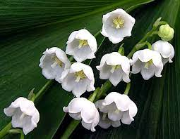
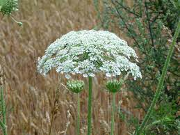

Белый ландыш
Белый ландыш - многолетнее травянистое растение, известное своими прекрасными цветками и ароматом. Растет в тенистых лесах на территории Европы и Азии. В Республике Беларусь белый ландыш включен в Красную книгу и относится к видам, находящимся под угрозой. Численность популяции на сегодняшний дй день остается неизвестной, но известно, что растение находится под угрозой исчезновения из-за вырубки лесов и изменения климата.
Борщевик
Борщевик - многолетнее растение, которое может достигать высоты в несколько метров. Растет в заболоченных местах, на полях и обочинах дорог. Борщевик является опасным растением, так как его сок может вызывать ожоги и раздражение кожи. В Республике Беларусь борщевик включен в Красную книгу и считается редким видом.